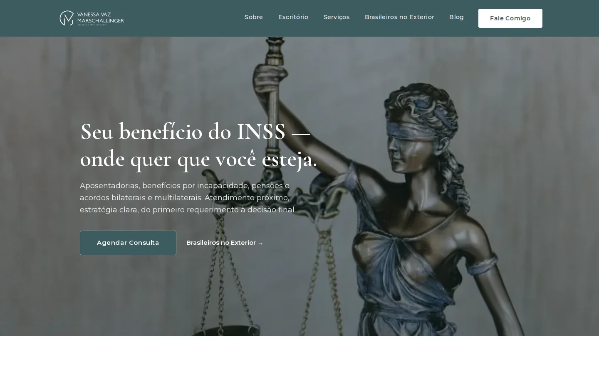
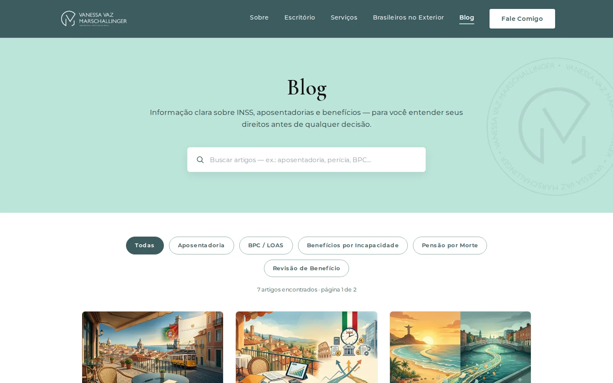

Case · Site institucional + blog
Vanessa Vaz Advocacia: presença digital para atender brasileiros a qualquer distância
Site institucional com blog integrado para Vanessa Vaz Marschallinger, advogada especializada em Direito Previdenciário baseada na Áustria, com atendimento a brasileiros no exterior.

Contexto
Vanessa Vaz Marschallinger é advogada especializada em Direito Previdenciário, baseada em Gunskirchen (Áustria), com atendimento internacional a brasileiros que precisam resolver aposentadorias, benefícios e acordos com o INSS estando fora do país.
Esse público tem uma dor específica: dúvidas jurídicas antes mesmo de contratar, sem um canal de conteúdo confiável e sem uma advogada que entenda a rotina de quem mora fora.
O problema
- Sem blog ou conteúdo educativo próprio para tirar dúvidas recorrentes sobre INSS.
- Sem uma seção dedicada que deixasse claro o atendimento a brasileiros no exterior.
- Publicar conteúdo jurídico dependeria de um desenvolvedor a cada novo artigo.
A solução
Site institucional com blog integrado e CMS próprio, organizado para quem busca informação jurídica antes de decidir.
- Blog por categoria — Aposentadoria, BPC/LOAS, Benefícios por Incapacidade, Pensão por Morte, Revisão de Benefício, com busca por palavra-chave.
- Seção Brasileiros no Exterior — página dedicada ao público que vive fora do Brasil.
- CMS próprio — ela publica artigos, imagens de capa e anexos sozinha, via Payload CMS.
- Institucional completo — Sobre, Escritório, Serviços e canal direto de contato (Fale Comigo).
O produto em uso

Resultados
Métricas de conversão (agendamentos originados pelo blog) estão em levantamento com a cliente.
Engenharia
Depoimento
Publicar apenas com nome, cargo, organização e autorização registrada.
Seu público também precisa de conteúdo em que confiar?
Conte o cenário e voltamos em até um dia útil com os próximos passos.
Falar sobre meu projeto